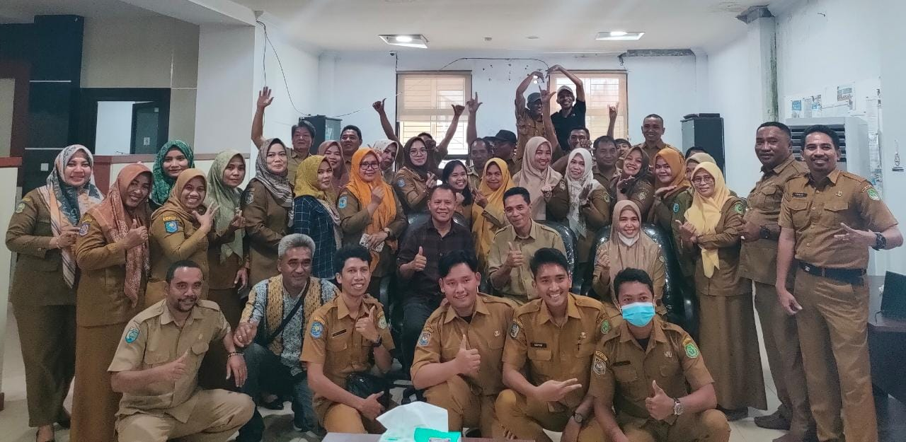

Pensiunnya Pejabat Pengambil Keputusan
6 February 2023
Acara Perpisahan Bapak Fuad Asagaf
(Foto: Rizky Prananda)
Mengucapkan terima kasih atas dedikasi dan kerja kerasnya selama 40 tahun terakhir. Bapak Fuad Asagaf, mantan pejabat pengadaan, telah memberikan kontribusi yang signifikan bagi pemerintah Indonesia selama kariernya. Beliau telah menjabat sebagai Pejabat Pembuat Komitmen (PPK) untuk berbagai lembaga pemerintah, memastikan bahwa proses pengadaan dilaksanakan dengan cara yang transparan dan efisien.
Sepanjang karier beliau, Bapak Asagaf dikenal karena profesionalisme, integritas, dan komitmennya terhadap pelayanan publik. Beliau memainkan peran penting dalam melaksanakan reformasi pengadaan yang telah membantu meningkatkan akuntabilitas dan mengurangi korupsi di pemerintah Indonesia.
Sebagai penghargaan atas jasanya, Bapak Asagaf telah dianugerahi berbagai penghargaan, termasuk Satyalancana Karya Satya dan Bintang Jasa Utama. Pensiunnya beliau menandai berakhirnya sebuah era bagi pemerintah, karena beliau meninggalkan warisan keunggulan yang sulit untuk disaingi.
Kami mengucapkan selamat yang sebesar-besarnya untuk Bapak Asagaf di masa pensiunnya dan mengucapkan terima kasih atas banyaknya tahun pelayanan yang telah diberikan kepada rakyat Indonesia.
Editor : Aarrie Tarigan